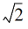
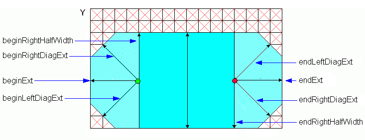
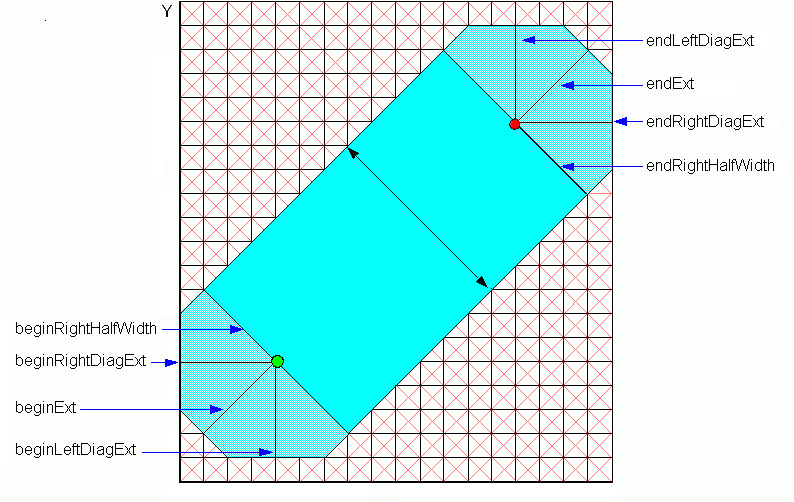
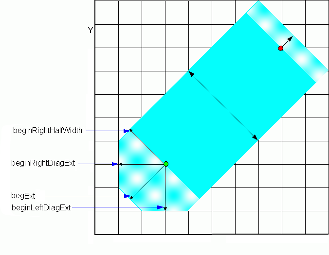

dbCreatePathSeg
dbCreatePathSeg(
d_cellviewId
txl_layerPurpose
l_beginPt
l_endPt
n_width
t_beginStyle
t_endStyle
[list(
n_beginExt
n_endExt
[ l_extValue ]
)]
)
=> d_pathSegId / nil
Description
Creates a path segment based on the specified parameters. The argument l_extValue is an optional list that contains six entries.
A pathSeg object represents a 2-point routing segment. Each point has the following
associated characteristics.
-
a layer-purpose pair
-
specific width
-
specific style
The oaPathSeg class derives from the oaShape class. For more information, see Wire Elements in Virtuoso Space-based Router User Guide.
Arguments
|
d_cellViewId
|
The database ID of the cellview.
|
|
txl_layerPurpose
|
Name, number, or a list of layer or layer-purpose pair.
For more information, see Database Access Function Argument Types.
|
|
l_beginPt
|
The start point of the path segment.
|
|
l_endPt
|
The end point of the path segment.
|
|
n_width
|
The width of the path segment. For a diagonal pathSeg, you should specify this value in diagonal unit (that is, n_width* 
/2) to create a pathSeg with the desired width n_width.
The width attribute reflects the oaPathSeg pathStyle width. The width is given in orthogonal units if the path is orthogonal and in diagonal units if the path is diagonal.
|
|
t_beginStyle
t_endStyle
|
The beginning and ending style of the path segment.
Valid values:
-
truncate: The pathSeg terminates at the end point with no overlap. -
extend: The pathSeg terminates at one-half of the segment’s width past the end point. -
variable: The pathSeg terminates at a specified (endExt) distance past the end point. You need to specify the value of n_beginExt and/or n_endExt. -
chamfer: The pathSeg is terminated with an octagonal (chamfered) end style of fixed uniform dimensions. -
custom: A customized style. You need to specify the value set of n_beginExt, n_beginLeftDiagExt, n_beginRightDiagExt, n_beginRightHalfWidth, and/or n_endExt, n_endLeftDiagExt, n_endRightDiagExt, n_endRightHalfWidth in the argument l_extValue.
|
|
|
When either of the pathSeg ends is custom style, the width of the pathSeg is determined by:
-
When the beginStyle is not custom but the endStyle is
custom: the width of this pathSeg defaults to twice the n_endRightHalfWidth value specified. -
When the endStyle is not custom but the beginStyle is
custom: the width of this pathSeg defaults to twice the n_beginRightHalfWidth value specified. -
When both the beginStyle and the endStyle are
custom: the width of this pathSeg defaults to the sum of n_beginRightHalfWidth and n_endRightHalfWidth. -
When neither of the begin or end styles are
custom styles: the specified n_width value is used.
|
|
n_beginExt
|
(Optional) Extension of the beginning. For a diagonal pathSeg, you should specify this value in diagonal unit (that is, n_beginExt*
) to create a pathSeg with the desired extension n_beginExt.
n_beginExt is valid only when t_beginStyle is set to custom or variable.
|
|
n_endExt
|
(Optional) Extension of the end. For a diagonal pathSeg, user should specify this value in diagonal unit (that is, n_endExt*
) to create a pathSeg with the desired extension n_endExt.
n_endExt is valid only when t_endStyle is set to custom or variable.
|
|
l_extValue
|
(Optional) Specifies a list containing six entries that are defined as follows:
list( n_beginLeftDiagExt n_beginRightDiagExt n_beginRightHalfWidth n_endLeftDiagExt n_endRightDiagExt n_endRightHalfWidth)
This value is useful only when at least one of the t_beginStyle or t_endStyle is set to custom. If thel_extValue argument is specified and t_beginStyle is not custom, the first three values are ignored, and if t_endStyle is not custom, the last three values are ignored.
These entries are explained as follows:
-
n_beginLeftDiagExt: left diagonal extension for the beginning of a pathSeg with custom chamfering. For an orthogonal path segment, you should specify this value in diagonal unit (that is, n_beginLeftDiagExt*
 ) to create a pathSeg with the desired beginning left diagonal extension n_beginLeftDiagExt.
) to create a pathSeg with the desired beginning left diagonal extension n_beginLeftDiagExt. -
n_beginRightDiagExt: right diagonal extension for the beginning of a pathSeg with custom chamfering. For an orthogonal path segment, you should specify this value in diagonal unit (that is, n_beginRightDiagExt
* ) to create a pathSeg with the desired beginning right diagonal extension n_beginRightDiagExt.
) to create a pathSeg with the desired beginning right diagonal extension n_beginRightDiagExt.
|
|
|
-
n_beginRightHalfWidth: the right half width to use at the beginning of a path segment with custom chamfering. For a diagonal pathSeg, you should specify this value in diagonal unit (that is, n_beginRightHalfWidth*
 ) to create a pathSeg with the desired beginning right half width n_beginRightHalfWidth. If you do not specify a valid beginRightHalfWidth value, a warning message is generated in the CIW, and beginRightHalfWidth defaults to half of the segment width.
) to create a pathSeg with the desired beginning right half width n_beginRightHalfWidth. If you do not specify a valid beginRightHalfWidth value, a warning message is generated in the CIW, and beginRightHalfWidth defaults to half of the segment width. -
n_endLeftDiagExt: left diagonal extension for the ending of a pathSeg with custom chamfering. For an orthogonal pathSeg, you should specify this value in diagonal unit (that is, n_endLeftDiagExt*
) to create a pathSeg with the desired ending left diagonal extension n_endLeftDiagExt.
-
n_endRightDiagExt: right diagonal extension for the ending of a pathSeg with custom chamfering. For an orthogonal pathSeg, you should specify this value in diagonal unit (that is, n_endRightDiagExt*
 ) to create a pathSeg with the desired ending right diagonal extension n_endRightDiagExt.
) to create a pathSeg with the desired ending right diagonal extension n_endRightDiagExt. -
n_endRightHalfWidth: the right half width to use at the ending of a pathSeg with custom chamfering. For a diagonal pathSeg, you should specify this value in diagonal unit (that is, n_endRightHalfWidth*
 ) to create a pathSeg with the desired ending right half width n_endRightHalfWidth. If you do not specify a valid endRightHalfWidth value, a warning message is generated in the CIW, and endRightHalfWidth defaults to half of the segment width.
) to create a pathSeg with the desired ending right half width n_endRightHalfWidth. If you do not specify a valid endRightHalfWidth value, a warning message is generated in the CIW, and endRightHalfWidth defaults to half of the segment width.
|
Value Returned
|
d_pathSegId
|
When successful, returns the database ID of the created path segment.
|
|
nil
|
nil is returned if the cellview ID is invalid.
|
Examples
; Two ways of creating the same pathSeg with zero extension on both ends
dbCreatePathSeg(cv "Metal1" 0:0 1:0 0.1 "truncate" "truncate")
dbCreatePathSeg(cv "Metal1" 0:0 1:0 0.1 "variable" "variable" '(0.0 0.0))
; Two ways of creating the same pathSeg with half-width extension at the end
point
dbCreatePathSeg(cv "Metal1" 0:0 1:0 0.1 "truncate" "extend")
dbCreatePathSeg(cv "Metal1" 0:0 1:0 0.1 "truncate" "variable" '(0.0 0.05))
; Two ways of creating the same pathSeg with half-width extension at the begin
point
dbCreatePathSeg(cv "Metal1" 0:0 1:0 0.1 "extend" "truncate")
dbCreatePathSeg(cv "Metal1" 0:0 1:0 0.1 "variable" "truncate" '(0.05 0.0))
; Two ways of creating the same pathSeg with chamfer extension at the begin point
dbCreatePathSeg(cv "Metal1" 0:0 1:0 0.1 "chamfer" "truncate")
dbCreatePathSeg(cv "Metal1" 0:0 1:0 0.1 "custom" "truncate" list(0.05 0
'(0.075 0.075 0.05 0.0 0.0 0.0)))
; Two ways of creating the same pathSeg with chamfer extension at the end point
dbCreatePathSeg(cv "Metal1" 0:0 1:0 0.1 "truncate" "chamfer")
dbCreatePathSeg(cv "Metal1" 0:0 1:0 0.1 "truncate" "custom" list(0 0.05 '(0.0
0.0 0.0 0.075 0.075 0.05)))
; Example for creating diagonal pathSeg
width=0.12
cv=geGetWindowCellView()
mfgGrid=techGetMfgGridResolution(techGetTechFile(cv))
diagWidth=round(width*sqrt(2)/mfgGrid)*mfgGrid
dbCreatePathSeg(cv "Metal1" 0:0 2:2 diagWidth "variable" "variable")
dbCreatePathSeg(cv "Metal1" 0:0 2:2 diagWidth "extend" "extend")
; Example for creating a diagonal pathSeg with custom ends
halfDiag=diagWidth/2
halfWidth=width/2
dbCreatePathSeg(cv "Metal1" 5:0 7:2 diagWidth "custom" "custom" list(halfDiag halfDiag list(halfWidth halfWidth halfDiag halfWidth halfWidth halfDiag)))
; Example for creating an orthogonal pathSeg with custom ends
dbCreatePathSeg(cv "Metal1" 6:1 2:1 .65 "custom" "custom" list(.6 .6 list(.2 .2 .3 .1 .1 .35)))
Some examples of figures that define various terms for a Pathseg are given below.
An orthogonal PathSeg (in which the left and right diagonals of the chamfer are obtained by multiplying the extension by 3/2):

A diagonal PathSeg (in which the left and right diagonals of the chamfer are obtained by multiplying the extension by 2/3):

A PathSeg with two different end styles:

Related Topics
Database Access Function Argument Types
Interconnect Functions
Return to top